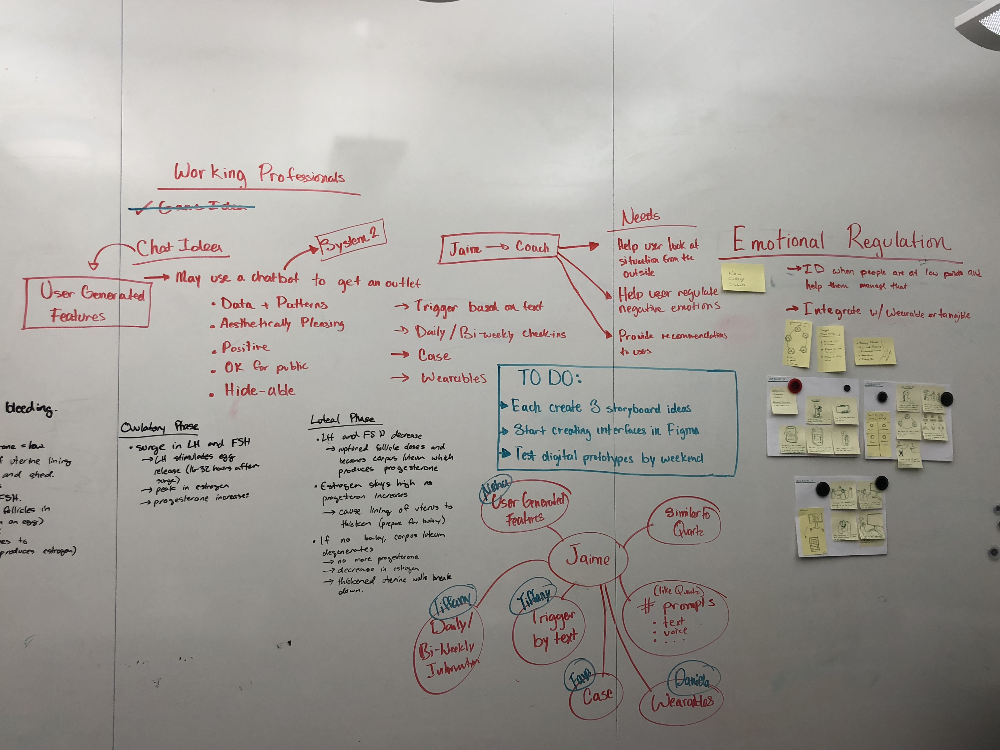

00 My Role
User Researcher, UX Designer, UX Writer
01 Context and Problem
According to a 2018 American Psychology Association study, Millennials currently experience the highest levels of stress of any generation. Stressors include (un)employment, paying student loans, starting families, healthcare, social media, and more. Therefore young adults are more motivated than ever to regulate their negative emotions under the stress.
There are a number of potential solutions on the market, ranging from AI powered chatbots to apps that connect you to real therapists. In these cases, they often fall into two extremes: they either lack personalization or require too much time investment and input from the user.
02 Solution
In order to address both issues identified above, we created a life coaching app called Jamie that gathers contextual data such as physiological data and text-based input to trigger timely interventions that are contextually relevant. Contextual information is gathered via a bio-sensing phone case, wearables such as a fitbit, or via contextual data such as the volume of emails you receive or the valence of words you’re using in your texts. These interventions will teach users strategies to understand their own triggers and manage stressful reactions that may result from them. The methods are backed by psychological research literature regarding coping with negative emotions, focused on approach and avoidance techniques, which I discuss in more detail in the “Research” subsection of our Approach below.
You can watch the prototype in action in the video below.
03 Process
Selecting the Topic
Our group’s ideas game together very naturally from our interest in tackling issues related to emotional regulation, a topic very salient to people our age. We did an idea generation blitz, that involved brainstorming 30 ideas that ranged from a daily affirmation mirror to a pen that could remind you to breathe every time it sensed you not doing so. Ultimately, we landed on an app that could help teenagers and young adults learn how to start regulating emotions since they were at the start of their life.
A Bad Pivot
We ran a few user tests on university freshman, as well as a high schooler and received generally lukewarm feedback. The main issue was that, while the tool itself could possibly be useful in the long run, there seemed to be very little reason for a teenager to pick it up and use it in the first place. In taking this feedback seriously, we reassessed what would most likely encourage teenagers to pick up this app and came up with the idea of a mental health game where you would advance to various levels of emotional regulation through mini-games and challenges.
However, the more that we workshopped this idea (including exploring putting the games in the physical world to encourage social interaction with strangers), the further away we felt like we were getting from the point of the project, which was to create an effective intervention that would persuade someone to regulate their emotions better.
Instead, we sat down for two hours and reassessed our original goals and who we wanted to help.
Shifting Demographics and Reframing
During this session, we decided to strip our idea back to first principles: what the problem was we were tackling, who would benefit.

In the end, rather than try to retrofit the design to fit our target market, we felt passionate enough about the solution to try to find a market that would fit the original idea we had in mind. We decided to focus our attention on young professionals and to reframe Jamie as a life coach app, rather than an emotional regulation chatbot. Though this reframing is subtle, it helped us ensure Jamie could deliver feasible regulation strategy suggestions, rather than very context specific guidance that could be entirely wrong.
Final Iterations
With this new pivot in mind, we did another round of literature review, focused on emotional regulation strategies and how people generally cope with stress. The real breakthrough in research was when we learned that most use “approach” (focused on fixing a problem) or “avoidance” (focused on distracting yourself from a problem) strategies to deal with stressful situations. With this direction, we could create strategies/features that catered to both. This was the key piece of information that gave us a strong direction towards the final prototype.
Design Decisions
1. Jamie as a chat interface.
It was important to us that people felt comfortable using the app from the get-go. Inspired by the Quartz news app, we created an interface that looked like a messaging app so that you felt like you were talking to an entity.
2. Jamie as a blank avatar.
We considered designing an icon that gave Jamie its own personality and look, but it ultimately felt counter-intuitive to the point of the app. Studies have shown that giving a character an avatar gives removes the anonymity of that character. In this case we wanted the focus to be on the user and their own self-improvement; not in appeasing this AI bot.
3. Gathering physiological data as contextual triggers for real-time intervention.
This was a design decision we made early on because we wanted to make Jamie as easy to use off the bat as possible. This meant that it needed to be capable of collecting contextual information without any kind of active input from the user. One main way to do this other than allowing the app to access your emails and texts (which could definitely come off as creepy) was to sense physiological state such as skin conductance and heart activity. By having this type of information, we could create a solution that would deliver a timely intervention right at the moment of experience.
4. Ability to add your own triggers and contextual information.
Research has shown there are some key features that all apps must include in order to encourage behavior change. A big one is the ability for users to control their own data. Though we wanted to create a design that required little user input upfront, we did not want to make a Black Mirror-type tool, where the user had little control over how their data was being collected, so we made sure to have an extensive user preferences section, where users could add, change, and remove triggers that they felt were inaccurate or intrusive.
04 Learnings
1. Take user tests seriously, but don’t take lukewarm user tests as a sign that you need to completely change your idea.
2. While important to focus on cost and feasibility, sometimes its more important to remove those constraints during the ideation phase to encourage creativity.